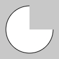
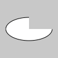
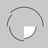
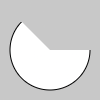
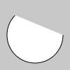
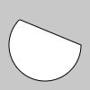
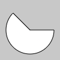
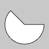
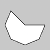
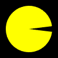

Draw an arc.
An arc is a section of an ellipse defined by the x, y, w and h parameters. x and yset the location of the arc's center. w and h set the arc's width and height. Seeellipse() and ellipseMode() for more details.
The fifth and sixth parameters, start, and stop, set the angles between which todraw the arc. Arcs are always drawn clockwise from start to stop. Angles arealways given in radians.
The seventh parameter, mode, is optional. It determines the arc's fill style. The fillmodes are a semi-circle (OPEN), a closed semi-circle (CHORD), or a closed piesegment (PIE).
The eighth parameter, details, is also optional. It determines how many vertices areused to draw the arc in WebGL mode. The default value is 25.

function setup() {ㅤㅤcreateCanvas(100, 100);
ㅤㅤbackground(200);
ㅤㅤarc(50, 50, 80, 80, 0, PI + HALF_PI);
ㅤㅤdescribe('A white circle on a gray canvas. The top-rightquarter of the circle is missing.');}

function setup() {ㅤㅤcreateCanvas(100, 100);
ㅤㅤbackground(200);
ㅤㅤarc(50, 50, 80, 40, 0, PI + HALF_PI);
ㅤㅤdescribe('A white ellipse on a gray canvas. The top-right quarter of the ellipse is missing.');}

function setup() {ㅤㅤcreateCanvas(100, 100);
ㅤㅤbackground(200);
ㅤㅤ// Bottom-right.ㅤㅤarc(50, 55, 50, 50, 0, HALF_PI);
ㅤㅤnoFill();
ㅤㅤ// Bottom-left.ㅤㅤarc(50, 55, 60, 60, HALF_PI, PI);
ㅤㅤ// Top-left.ㅤㅤarc(50, 55, 70, 70, PI, PI + QUARTER_PI);
ㅤㅤ// Top-right.ㅤㅤarc(50, 55, 80, 80, PI + QUARTER_PI, TWO_PI);
ㅤㅤdescribe(ㅤㅤ'A shattered outline of an circle with a quarter of awhite circle at the bottom-right.'ㅤ);}

function setup() {ㅤㅤcreateCanvas(100, 100);
ㅤㅤbackground(200);
ㅤㅤ// Default fill mode.ㅤㅤarc(50, 50, 80, 80, 0, PI + QUARTER_PI);
ㅤㅤdescribe('A white circle with the top-right third missing.The bottom is outlined in black.');}

function setup() {ㅤㅤcreateCanvas(100, 100);
ㅤㅤbackground(200);
ㅤㅤ// Default fill mode.ㅤㅤarc(50, 50, 80, 80, 0, PI + QUARTER_PI);
ㅤㅤdescribe('A white circle with the top-right third missing.The bottom is outlined in black.');}

function setup() {ㅤㅤcreateCanvas(100, 100);
ㅤㅤbackground(200);
ㅤㅤ// CHORD fill mode.ㅤㅤarc(50, 50, 80, 80, 0, PI + QUARTER_PI, CHORD);
ㅤㅤdescribe('A white circle with a black outline missing asection from the top-right.');}

function setup() {ㅤㅤcreateCanvas(100, 100);
ㅤㅤbackground(200);
ㅤㅤ// PIE fill mode.ㅤㅤarc(50, 50, 80, 80, 0, PI + QUARTER_PI, PIE)
ㅤㅤarc(50, 50, 80, 80, 0, PI + QUARTER_PI, PIE) third ismissing.');}

function setup() {ㅤㅤcreateCanvas(100, 100, WEBGL);
ㅤㅤbackground(200);
ㅤㅤ// PIE fill mode.ㅤㅤarc(0, 0, 80, 80, 0, PI + QUARTER_PI, PIE);
ㅤㅤdescribe('A white circle with a black outline. The top-rightthird is missing.');}

function setup() {ㅤㅤcreateCanvas(100, 100, WEBGL);
ㅤㅤbackground(200);
ㅤㅤ// PIE fill mode with 5 vertices.ㅤㅤarc(0, 0, 80, 80, 0, PI + QUARTER_PI, PIE, 5);
ㅤㅤdescribe('A white circle with a black outline. The top-rightthird is missing.');}

function setup() {ㅤㅤcreateCanvas(100, 100);
ㅤㅤbackground(200);
ㅤㅤdescribe('A yellow circle on a black background. The circleopens and closes its mouth.');}
function draw() {ㅤㅤbackground(0);
function draw() {ㅤㅤbackground(0);
ㅤㅤ// Style the arc.ㅤㅤnoStroke();ㅤㅤfill(255, 255, 0);
ㅤㅤ// Update start and stop angles.ㅤㅤlet biteSize = PI / 16;ㅤㅤlet startAngle = biteSize * sin(frameCount * 0.1) + biteSize;ㅤㅤlet endAngle = TWO_PI - startAngle;
ㅤㅤ// Draw the arcㅤㅤarc(50, 50, 80, 80, startAngle, endAngle, PIE);}
ㅤarc(x, y, w, h, start, stop, [mode], [detail])
xㅤㅤㅤㅤㅤㅤNumber: x-coordinate of the arc's ellipse.yㅤㅤㅤㅤㅤㅤNumber: y-coordinate of the arc's ellipse.wㅤㅤㅤㅤㅤㅤNumber: width of the arc's ellipse by default.hㅤㅤㅤㅤㅤㅤNumber: height of the arc's ellipse by default.startㅤㅤㅤㅤNumber: angle to start the arc, specified in radians.stopㅤㅤㅤㅤNumber: angle to stop the arc, specified in radians.modeㅤㅤㅤCHORD|PIE|OPEN: optional parameter to determine the way of drawing the arc. either CHORD,ㅤㅤㅤㅤㅤㅤPIE, or OPEN.detailㅤㅤㅤInteger: optional parameter for WebGL mode only. This is to specify the number of verticesㅤㅤㅤㅤㅤthat makes up the perimeter of the arc. Default value is 25. Won't draw a stroke for a detail ofㅤㅤㅤㅤㅤmore than 50.